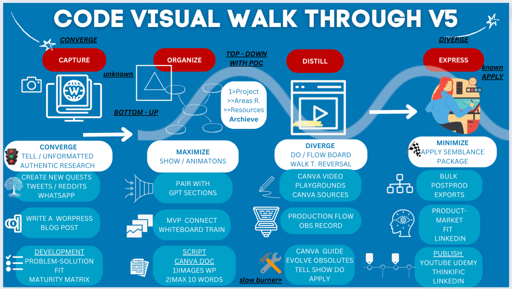
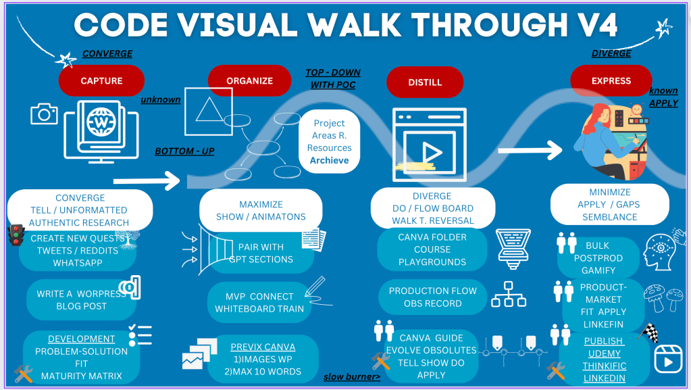

Canva Docs to Hold References for ScreenPlay
Updated Workflow

Old Workflow

Unveiling the CODE Visual Walkthrough V5: A Comprehensive Guide
In today's fast-paced world, structuring and presenting information in an effective and engaging manner is crucial. The CODE Visual Walkthrough V5 is a powerful framework designed to facilitate the capture, organization, distillation, and expression of ideas and projects. This blog post delves into each phase of the CODE Visual Walkthrough V5, providing insights on how to maximize its potential for your projects.
Capture: The Foundation of Authentic Research
The first phase of the CODE Visual Walkthrough V5 is all about capturing unformatted and authentic research. This phase emphasizes convergence, where you gather raw and unprocessed data from various sources. Whether it's tweets, Reddit posts, WhatsApp messages, or creating new quests, capturing authentic research forms the backbone of your project.
Key Activities:
-
Create New Quests: Engage with your audience on social media platforms like Twitter and Reddit.
-
Write a WordPress Blog Post: Share your findings and thoughts in a blog post.
-
Development: Focus on problem-solution fit and maturity matrix to ensure your project addresses real-world issues.
Organize: Structuring Your Insights
Once you've captured the necessary data, the next step is to organize it effectively. This phase involves both bottom-up and top-down approaches with a Proof of Concept (POC) to ensure that your project is structured and all resources are accounted for.
Key Strategies:
-
Maximize Show/Animations: Utilize visual aids to enhance understanding.
-
Pair with GPT Sections: Integrate sections generated by GPT to streamline content.
-
MVP Connect Whiteboard Train: Develop a Minimum Viable Product (MVP) and connect ideas using whiteboard training sessions.
Distill: Refining Your Content
Distillation is the process of refining and focusing your content to its core essence. This phase requires diverging from the main flow to explore different pathways and reversing certain thought processes to ensure comprehensive coverage of the topic.
Essential Actions:
-
Do/Flow Board: Use flow boards to map out your project steps.
-
Canva Video Playgrounds: Leverage Canva for creating engaging video content.
-
Production Flow OBS Record: Use OBS (Open Broadcaster Software) to record your production flow.
Express: Bringing Your Project to Life
The final phase of the CODE Visual Walkthrough V5 is about expressing your refined ideas and content. This phase involves minimizing unnecessary elements and applying a semblance package to present your project in a polished manner.
Final Steps:
-
Apply Semblance Package: Ensure your project is cohesive and well-presented.
-
Bulk Postproduction Exports: Prepare bulk exports for various platforms.
-
Product-Market Fit: Assess and align your project with market needs, utilizing LinkedIn for professional outreach.
-
Publish: Share your final product on platforms like YouTube, Udemy, Thinkific, and LinkedIn.
Conclusion
The CODE Visual Walkthrough V5 provides a structured yet flexible approach to project development and content creation. By following its phases—Capture, Organize, Distill, and Express—you can ensure that your ideas are thoroughly researched, well-organized, refined, and effectively communicated. Embrace this walkthrough to elevate your projects and achieve impactful results.
Imported from rifaterdemsahin.com · 2024